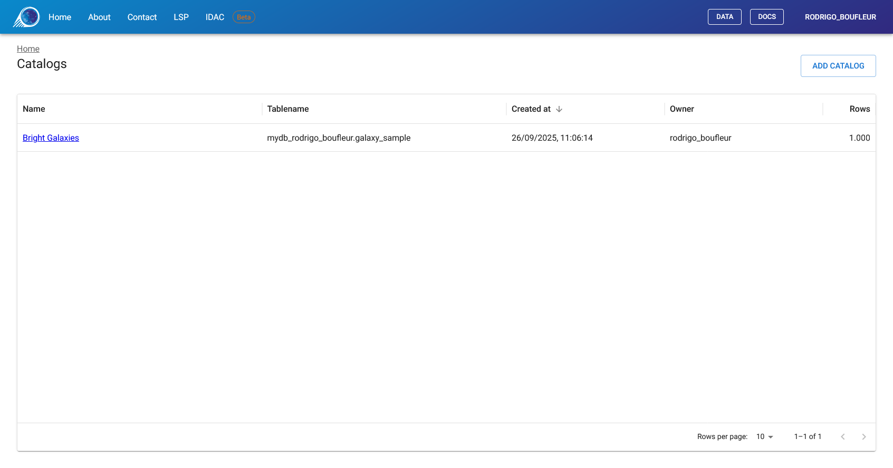
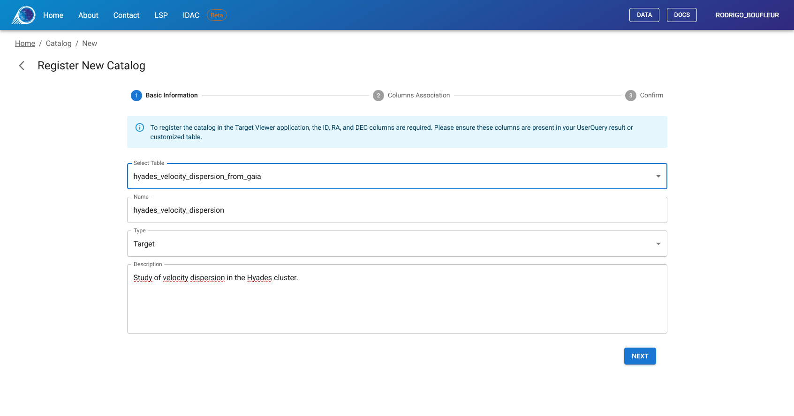
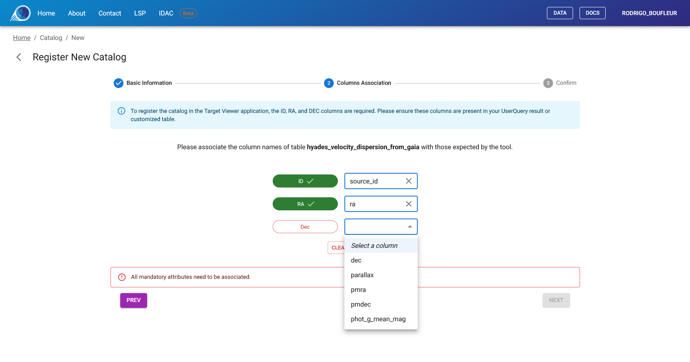
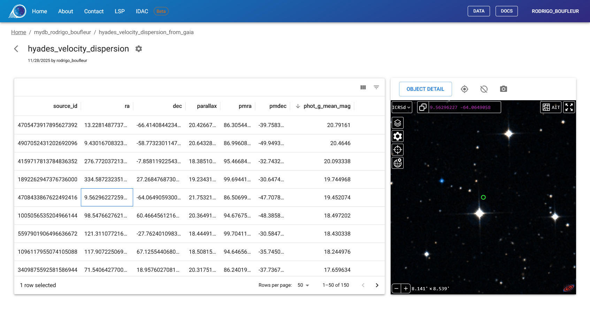

Target Viewer
Target Viewer es una herramienta personalizada para la visualización de imágenes astronómicas basada en listas de objetos definidos previamente por el usuario. El sistema emplea Aladin Lite v3 para proporcionar una experiencia integrada de exploración de catálogos almacenados en el espacio personal de base de datos del usuario.
De manera análoga al Sky Viewer, el Target Viewer fue originalmente desarrollado en el ámbito del survey DES (Dark Energy Survey). La iteración actual, diseñada para integrarse al portafolio de servicios del IDAC-Brasil, es una solución flexible que ofrece niveles de acceso diferenciados: datos públicos destinados a la comunidad general y datos embargados (como los del LSST) restringidos a miembros autenticados.
Descripción general¶
El Target Viewer permite a los astrónomos:
- Registrar tablas personalizadas como catálogos de objetos
- Visualizar imágenes astronómicas centradas en cada objeto
- Navegar por catálogos extensos con funciones avanzadas de filtrado y ordenamiento
- Personalizar la configuración de visualización por catálogo
Primeros pasos¶
Paso 1: Crear la lista de objetos en User Query¶
Antes de utilizar el Target Viewer, es necesario crear una tabla que contenga los objetos de interés mediante User Query.
La tabla debe contener al menos tres columnas:
- Un identificador de objeto (p. ej.,
objectId,id) - Ascensión Recta en grados decimales (p. ej.,
ra) - Declinación en grados decimales (p. ej.,
dec)
La tabla puede crearse mediante:
- La ejecución de una consulta SQL y el almacenamiento de los resultados
- La unión de datos de catálogos existentes con criterios de selección propios
Note
Para obtener instrucciones detalladas sobre la creación y el almacenamiento de tablas, consulte la documentación de User Query.
Paso 2: Registrar la tabla en Target Viewer¶
- Acceda al Target Viewer e inicie sesión
- Haga clic en "Add Catalog" en la página principal
- Siga el asistente de registro de 3 pasos (descrito a continuación)
Paso 3: Visualizar los objetos¶
Tras el registro, el catálogo aparecerá en la página principal. Haga clic en él para comenzar a explorar los objetos con imágenes astronómicas.
Página principal¶
La página principal muestra todos los catálogos registrados. Cada entrada presenta el nombre del catálogo, el nombre de la tabla original, la fecha de creación y el número de filas.
Haga clic en el nombre de un catálogo para abrir la interfaz de visualización, o utilice el botón "Add Catalog" para registrar una nueva tabla.

Registro de un nuevo catálogo¶
El proceso de registro consta de tres pasos. Si se interrumpe, el sistema le solicitará continuar o descartar el registro pendiente en su próxima visita.
Paso 1: Información básica¶
Seleccione la tabla de la lista desplegable y proporcione un título descriptivo. Solo aparecerán en la lista las tablas que aún no hayan sido registradas.

Paso 2: Asociación de columnas¶
Este paso establece la correspondencia entre las columnas de la tabla y los campos requeridos. El sistema necesita identificar qué columnas contienen el ID del objeto, la AR y la Dec.
La interfaz muestra cada campo requerido con un indicador de color:
- 🔴 Rojo = Aún no asignado (requerido)
- 🟢 Verde = Asignado correctamente
Seleccione la columna apropiada de su tabla para cada campo requerido. El botón "Complete Registration" estará disponible únicamente cuando todos los campos requeridos estén asignados.
Asignaciones requeridas:
- ID: Columna del identificador de objeto
- RA: Columna de Ascensión Recta (debe estar en grados decimales)
- Dec: Columna de Declinación (debe estar en grados decimales)

Paso 3: Confirmación¶
Revise la configuración y haga clic en "Complete Registration" para finalizar. El catálogo aparecerá inmediatamente en la página principal.
Visualización de catálogos¶
La interfaz principal de visualización se divide en dos paneles:
- Panel izquierdo: Tabla de datos con los registros del catálogo
- Panel derecho: Visor de imágenes astronómicas Aladin Lite

Uso de la grilla de datos¶
La grilla de datos muestra todos los registros del catálogo con funcionalidades completas de ordenamiento y filtrado.
Navegación:
- Haga clic en los encabezados de columna para ordenar
- Utilice los iconos de filtro para aplicar condiciones (igual a, contiene, mayor que, etc.)
- Navegue entre páginas mediante los controles en la parte inferior
Selección:
- Haga clic en cualquier fila para seleccionarla
- El visor Aladin Lite se centra automáticamente en el objeto seleccionado
- Un círculo marcador indica la posición del objeto
Note
La selección se conserva mientras la pestaña del navegador permanezca abierta. Al actualizar la página se mantiene la selección, pero al cerrar la pestaña se pierde.
Acciones de la barra de herramientas¶
Sobre el visor Aladin Lite, una barra de herramientas proporciona acciones rápidas para el objeto seleccionado:
- Object Detail: Abre una vista detallada en una nueva pestaña con todas las propiedades del objeto
- Center on Target: Vuelve a centrar el visor en el objeto seleccionado
- Show/Hide Marker: Alterna la visibilidad del círculo marcador
- Take Snapshot: Descarga la vista actual como imagen
Object Detail¶
Haga clic en "Object Detail" para abrir una página dedicada al objeto seleccionado. Esta vista muestra:
- Panel izquierdo: Todas las propiedades del catálogo en formato de tabla
- Panel derecho: Visor Aladin Lite completo centrado en el objeto
Esta funcionalidad es útil para inspecciones detalladas o para compartir un enlace a un objeto específico.
Configuración del catálogo¶
Los propietarios del catálogo pueden acceder a la configuración haciendo clic en el icono de engranaje (⚙️) en el encabezado del catálogo.
Opciones disponibles¶
Metadatos:
- Actualizar el título y la descripción del catálogo
Visualización:
- Default Survey: Seleccionar la imagen de fondo a mostrar
- Default FOV: Establecer el campo de visión inicial (en minutos de arco)
- Marker Radius: Establecer el tamaño del marcador (en segundos de arco)
Asociación de columnas:
- Modificar las asignaciones de columnas ID/RA/Dec si es necesario
Eliminar catálogo:
- Eliminar el registro del catálogo (no afecta la tabla original)
Image Surveys disponibles en LIneA¶
Los siguientes surveys están disponibles como imágenes de fondo:
| Survey | Acceso | Descripción |
|---|---|---|
| DES DR2 IRG | Público | Dark Energy Survey Data Release 2 (composición en color) |
| Rubin First Look | Público | Imágenes públicas iniciales del Observatorio Rubin |
| LSST DP0.2 | Restringido | Data Preview 0.2 (Simulación). Exclusivo para miembros. |
| LSST DP1 | Restringido | Data Preview 1. Exclusivo para miembros. |
Los surveys restringidos solo aparecen en la lista desplegable si el usuario pertenece al grupo de colaboración correspondiente. La autenticación se gestiona automáticamente a través de la LIneA Science Platform.
Note
Además de los surveys alojados en LIneA, es posible acceder a cualquier survey público o superposición de catálogos del CDS mediante los menús nativos de Aladin Lite descritos a continuación.
Referencia del visor Aladin Lite¶
El Target Viewer utiliza Aladin Lite v3 para la visualización de imágenes astronómicas. Esta sección describe las funcionalidades nativas del visor, las cuales son independientes de la aplicación Target Viewer.
Barra de búsqueda¶
Ubicada en la parte superior del visor. Permite navegar a cualquier posición mediante:
- Coordenadas: Introduzca el formato decimal o sexagesimal (p. ej.,
13 25 27.6 -43 01 09) - Nombre de objeto: Introduzca un identificador (p. ej.,
NGC 4755) para resolver mediante el servicio Sesame
Administrador de capas (icono de pila)¶
Acceso a catálogos y surveys remotos del CDS:
- Overlays: Añadir capas de catálogos de SIMBAD, Gaia, 2MASS y otros
- Surveys: Alternar entre diferentes surveys de imágenes de servidores remotos
Controles de imagen¶
Cuando se selecciona un survey en el administrador de capas:
- Contrast: Ajustar brillo, saturación y gamma
- Opacity: Controlar la transparencia de la capa
- Colormap: Cambiar la representación de colores (Rainbow, Heatmap, Grayscale, etc.)
Configuración (icono de engranaje)¶
Alternar ayudas de visualización:
- Coordinate Grid: Mostrar líneas de AR/Dec
- Reticle: Mostrar mira central
- HEALPix Grid: Mostrar cuadrícula de teselación
Sistemas de coordenadas¶
Alternar entre marcos de referencia:
- ICRS: Coordenadas ecuatoriales (sexagesimal)
- ICRSd: Coordenadas ecuatoriales (grados decimales)
- GAL: Coordenadas galácticas
Proyecciones¶
Proyecciones de mapa disponibles:
- Tangential: Óptima para campos pequeños, círculos máximos rectos
- Stereographic: Preserva formas, adecuada para campos moderados
- Spheric: Vista de globo virtual
- Zenital equal-area: Preserva áreas, adecuada para estudios de densidad
- Mercator: Cilíndrica, adecuada para regiones ecuatoriales
- Hammer-Aitoff: Elipse de área equivalente para todo el cielo
- Mollweide: Pseudocilíndrica para todo el cielo
Menú contextual (clic derecho)¶
- What is this?: Consultar SIMBAD para objetos en la posición del clic
- Copy Coordinates: Copiar AR/Dec al portapapeles
- Take a snapshot: Descargar la vista actual como imagen
- Select sources: Dibujar regiones para filtrar puntos del catálogo
Reconocimientos¶
Esta aplicación utiliza el Aladin sky atlas desarrollado en el CDS, Observatorio de Estrasburgo, Francia:
- 2000A&AS..143...33B (Aladin Desktop)
- 2014ASPC..485..277B (Aladin Lite v2)
- 2022ASPC..532....7B (Aladin Lite v3)
Soporte¶
Ante cualquier consulta o inconveniente, contáctenos a través de la LIneA Science Platform o visite nuestro Portal de Documentación.